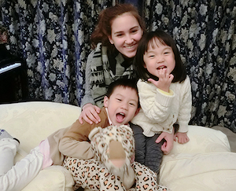
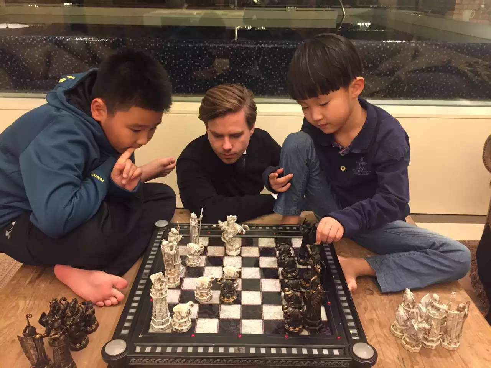
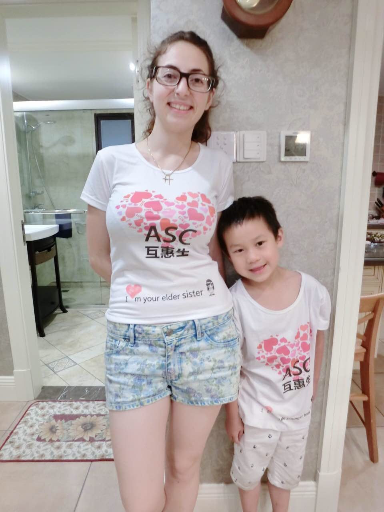
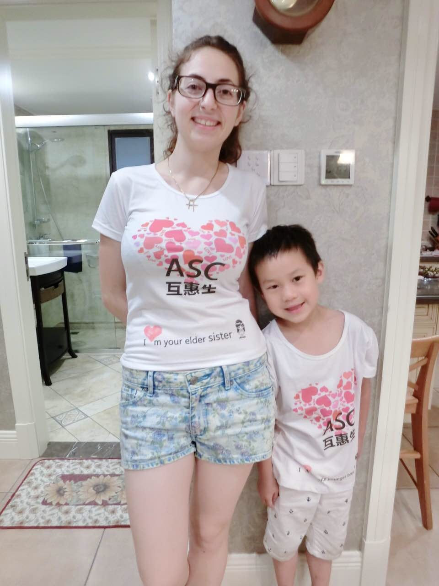

Home - Referencje
Julia’s Review: One year Mandarin Bridge Au Pair in China

My name is Julia, I am 18 years old and my home country is Germany. After graduating from school I decided to go to China as an Au-Pair with Mandarin Bridge. Today, I am in China for already four month. I live in Beijing which is the capital of China. We live in a big apartment in the 18th floor close to the city center. During my time here I live with the parents, two household employees and two babies. Longzuh is a one year old girl and Qinqin is a two year old boy. My main task is to care for the older boy and teach him English. The wish of the mother is that I am like an older sister for the two toddlers. In the first few days I felt a little bit lost in Beijing. The city is very big and very modern. There are thousands of skyscrapers, cars and people. But after a few weeks I already felt at home in here. The agency helped a lot to make me feel comfortable in my new family. Before I really started to work I visited a kind of Au-Pair-Training, which was organized by the agency. After this training I felt very good prepared for my year abroad. When I was still at home I thought the biggest problem would be the very foreign language, but it wasn’t. In the beginning we had to deal with several bureaucratic necessities, like for example extending my visa. The people from the agency were very helpful as they translated everything for me into German (my mother tongue). At home it was possible to speak English with the parents. However I’m learning Chinese in daily life, when I am with the kids and the family. In my opinion that is the best way to learn a new language. But additionally I visit the University three times a week. That’s also very good, as I can learn some grammar basics, phrases and new words. But the best thing is that I meet people from many different countries. I have made many friends from different countries like for example Germany, France, Laos, Turkmenistan, Kazakhstan, Russia, Ukraine, Costa Rica, and England. My host family gives me the opportunity to visit many places in Beijing and also different cities. At the moment I live for a few weeks in Shenzhen, in the South of China. I’m staying here in the grandparents’ apartment, which is very close to the sea. We also planned some trips to Hong Kong and Shanghai next year. In the end of July I will come back to Germany and my host family plans to fly with me and stay in my country for 2 weeks. They want to show their kids the way I live. I have a wonderful time here and I would recommend it to everyone who plans to stay a year in a foreign country. In my opinion China is the best choice, as all the people here are very polite, open minded and helpful. enjoy every day here and I can already do some basic communication in Chinese. But I didn’t only learn the language, I already learned a lot for my life! I saw many beautiful places together with my host family and together with some friends. I really want to thank the agency for the support so far. They have chosen a perfect matching family for me and it makes me feel good to know that I can always call them if a problem occurs.
Jannik 22 from Germany


Jolly good day! My name is Jannik, I am 22 and from Germany. I had the goal to lean Chinese for a while now and then, one day a Chinese friend of mine showed the website of Mandarin Bridge which I immediately applied at. About one month later I was in Chengdu, China. Here I am living with a Chinese family of the two parents, there two boys (6) and (9) and the two grandparents, who are taking care of household tasks. The weather in Chengdu is very hot and it took me a bit of time to get used to it. The food I actually like quite a lot although it is rather spicy. My task here is to keep the kids amused and talk English to them. We do lots of activities like playing football, swimming, Tennis, Basketball or bike riding through the city. In the evening, I chat with my host mother and we teach each other English and Chinese. My ability to speak and understand Chinese increases every day and after only a few days, I was already able to communicate simple things in  Chinese. I am making pancakes at least once a week because the kids love pancakes with Nutella! We went on holiday in Sanya, Hainan 6 days after I arrived in Chengdu. It was only two hour’s flight for Chengdu to Hainan and there it was even hotter but we had an amazing view at the ocean and the hotel in general (service, food etc.) was really good! So I really have a good time here! I learn new things every day, the people in general are really nice and I enjoy all the different cuisines. I can fully recommend a trip and longer stay in China as it broadens ones horizon enormously!
Chinese. I am making pancakes at least once a week because the kids love pancakes with Nutella! We went on holiday in Sanya, Hainan 6 days after I arrived in Chengdu. It was only two hour’s flight for Chengdu to Hainan and there it was even hotter but we had an amazing view at the ocean and the hotel in general (service, food etc.) was really good! So I really have a good time here! I learn new things every day, the people in general are really nice and I enjoy all the different cuisines. I can fully recommend a trip and longer stay in China as it broadens ones horizon enormously!

Stephanie 23 from Switzerland
My Name is Stephanie and now I am already over one month as Mandarin Bridge Aupair in Beijing. I will write a small review about my experience in Beijing I made since now. After I arrived I was friendly greeted by my host family and intermediary. The first days they teached me how to take care of baby’s/ children and we went to a lot places in Beijing. I think only in these short days I gain weight because the Chinese food is sooo delicious. And the city is really interesting and big. To life in a Host family is a great opportunity to know Beijing in Chinese way and not only in a tourist way. In the morning I go to a top University for study Chinese. After class I go home and play/ teach the baby/ child. It’s not like babysitting in a random family. My host family is my Chinese family and the baby/ child is like my sister. I play a lot of different games with her, I can use the kitchen and bake with her cake or making ice cream, sometime I remember old games which I did play in kindergarten and show them the family and parents play sometimes with us too and we have always a lot of fun. The days are never boring. I already did meet the whole family and they accepted me like a family member. In my free day I like to go with my friends I made at university to Beijing city or shopping malls.

Beijing is a really big, interesting and modern city. You can find everything here, from traditional to top modern. From stinky, old, small streets to big, clean, beautiful places. The Chinese people are really nice and friendly and have joy if you try to talk in Chinese with them which you will learn very fast here. Like I already said, the food is sooo good. You can find everything from traditional Chinese street food to top modern high quality restaurants. Even a lot of international kitchen they have. And I don’t even have to waive my beloved Swiss food because I can find everything in china too (except ovomaltine chocolate ;;_;;). For traveling around in Beijing I use the bus and Subway and sometime taxi which is really cheap and easy to use. In only a little more than a month I feel like I could stay here forever. I am so happy with my host family, my “work” as Aupair, the great opportunity to go to a top university in china for study Chinese and get to know the Chinese culture in a Chinese way. Sometime when I walk with my friend in free time in Beijing (they life in the campus) I can always say “ oh that’s sooo good I know this, my host family showed me this. Ah that’s so  delicious I know this from my host family. This is a good place with not a lot of tourist I went there one time with host family. Ah I know this, this is traditional from Beijing” and a lot of more and then I notice how much I already know about china/ Beijing just because I life with a Chinese family and in the middle of Chinese culture.
delicious I know this from my host family. This is a good place with not a lot of tourist I went there one time with host family. Ah I know this, this is traditional from Beijing” and a lot of more and then I notice how much I already know about china/ Beijing just because I life with a Chinese family and in the middle of Chinese culture.
If you are interested to be a Aupair, interested in Chinese culture and to have the great opportunity to learn Chinese language and culture then I can highly recommend to go as a Mandarin Bridge Aupair to China. You will not regret. You can only learn from this opportunity.
Alina 18 from Germany
Greetings! My name is Alina, I’m 18 years old and my home country is Germany. I have lived in Chengdu, China, for a little bit more than 5 months and want to briefly share my experience with you. Before I came to Chengdu I already visited China once and learned Chinese for around two years, and still I found myself being surprised more than once every day.


I lived with a Chinese host family and took care of their two children Barbie and Ken (no kidding, it’s their real English names!) which was challenging at first as I had literally zero experience with children, but with some help from my personal advisors. I quickly learned how to set boundaries and how to leave space for fun at the same time. At this point I really want to recommend anyone, that if there is any problem, even if it’s a little one, to tell it your personal coordinator. As long as you ask, you will always be helped. I had a really great host family as an employer, we respected each other and my host mum always had my back.
I was greatly respected and never required to do any household chores. As far as I know all aupairs were introduced as teachers, and being a teacher in Asia is very honorable. We visited many places together, as for example Jinli Street, Jinsha Museum, Qingchen Mountain, and enjoyed lots of delicious food. Even though we never really had the feeling of one family (which is most probably due to the fact that my host parents had to work a lot outside of Chengdu), we still had a special relationship, which is way more than that of an employer and employee.

I liked my university (Southwestern University of Finance and Economics) very much, as the teachers are very caring and prepare their classes very well. Moreover I found that my language course (Class D) was exceptionally well and even though my home was quite far away from the university, it was still very convenient to get there. There are a lot of international students at SWUFE and even though I loved their company and made some good friends, I strongly recommend finding some Chinese friends. It’s the people that make this country so beautiful! Moreover you can practice your Chinese, understand their way of thinking and their culture way better than any text book could ever teach you. Chinese people are very warm, helpful and indeed, open. They like to invite you to lunch or dinner and show you around in and out of Chengdu. Don’t be afraid or shy, just join some club or some activities in Chengdu where Chinese people come too and try to engage in some conversations (just say “你好” and they will start to ask you all kinds of questions).

I had an experience of a lifetime in Chengdu, and I would recommend going to China literally to anyone. In the beginning I had a lot of ups and downs, but as time went by I started to feel very happy. Do not expect however everything to be easy – it is not – and that is what it is all about. It is a wonderful challenge and an once-in-alifetime opportunity. You will not only learn Chinese here, but also grow as a person. I’ve never felt as free before as I did in China. Thank you Mandarin Bridge, for giving me this amazing opportunity and for always being there for me! One of the trips organized for all au-pairs. And yes, this is still China!
I hope I inspired you to find your freedom and have an amazing experience in China. My friends and I cheer you on! If you’re thinking of going to Chengdu and you have some questions you may contact me.